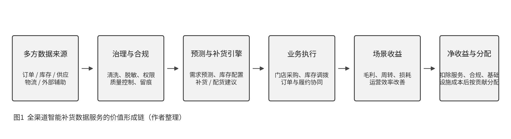

研究摘要
研究对象是“智能补货数据服务”，不是原始数据明细的直接买卖。
本研究关注订单、库存、供应、物流及外部辅助信息如何经过治理、预测和业务嵌入，形成门店级补货建议、库存配置和供应链协同能力；随后再讨论这项服务的收费逻辑、场景收益和多方收益分配。
01
研究范围与边界
“数据资源价值”“数据服务价格”“服务带来的经营增量收益”和“多主体收益分配”是四个不同层次的问题。它们相关，但不能相互替代。本网站将公开事实、谨慎解释和情景假设分开呈现。
| 层次 | 核心问题 | 本研究的处理方式 | 不作的推断 |
|---|---|---|---|
| 数据资源价值 | 订单、库存、供应等数据能否合规开发和使用？ | 识别来源、权利链、质量与合规成本 | 不为原始数据给出固定单价 |
| 数据服务价格 | 补货服务可以怎样收费？ | 归纳项目制、按调用量、订阅制等公开计费口径 | 不从案例效果倒推合同价格 |
| 场景增量收益 | 服务带来哪些可计量经营结果？ | 以新增毛利、库存成本、损耗和人效为收益法变量 | 不将单案例结果认定为普遍因果效应 |
| 收益分配 | 多方如何分享可分配净收益？ | 提出贡献度情景模拟框架 | 不声称存在统一行业分成比例 |
研究边界：涉及个人信息时，研究对象应是经授权、去标识化、聚合化、模型化或服务化后的结果；不将可识别个人的原始记录视为普通商品直接流转。
02
数据资产与服务形成过程
全渠道智能补货不是单纯预测销量，而是把多源数据转化为门店、仓库或品类层面的补货、配货与调拨建议。下图展示从数据来源到场景收益与分配的基本链条。

| 数据类别 | 典型信息 | 主要控制/提供主体 | 在服务中的作用与合规关注 |
|---|---|---|---|
| 交易与库存 | SKU、销量、库存量、退货、门店缺货 | 零售商、平台 | 形成需求与库存状态；涉及个人信息时需用途限定、最小必要 |
| 供应与履约 | 供给量、价格、到货、时效、物流、退货 | 供应商、物流商、零售商 | 支持补货提前期、供需协同和调拨决策；需明确合同使用范围 |
| 营销与外部辅助 | 促销、广告、天气、日历、商圈、客流 | 平台、公共数据运营方、第三方 | 解释需求波动；可通过 API 或数据服务调用，需记录来源与许可 |
| 衍生结果 | 需求预测、补货计划、库存预警、采购单 | 平台/数商与零售商共同形成 | 更适合作为对外流通和收费对象；应保留模型输出与使用边界 |
03
公开收费与计费证据
公开资料对合同价格和分成比例披露有限，但可以观察到服务采购、按调用量计费、按资源消耗计费和按用户订阅等收费口径。它们不能形成统一市场单价，只能作为收费机制、成本测算和市场法旁证。
| 公开证据 | 可验证事实 | 可支持的结论 | 不能据此得出的结论 |
|---|---|---|---|
| 北京消费大数据采集项目 | 2025 年中标总金额 190 万元，服务包含消费数据、重点商圈客流数据的采集、加工和监测。 | 消费与商圈数据的采集加工监测服务存在公开采购金额。 | 不能视为智能补货服务的标准合同价。 |
| 高德开放平台 | 位置服务存在按调用量计费的公开口径。 | 外部位置等辅助数据可以按 API 调用量进入服务成本。 | 不能代表整个补货系统的价格。 |
| Amazon Forecast | 需求预测云服务按数据导入、训练和预测等资源使用量计费。 | 需求预测能力可以采用使用量计费。 | 境外价格不能直接换算为中国项目单价。 |
| Dynamics 365 Supply Chain Management | 供应链管理产品公开采用按用户/月订阅。 | 供应链计划与库存优化可采用 SaaS 订阅交付。 | 不代表本土项目制的实际报价。 |
| 高德客流潮汐分析 | 公开产品页列示 50 万元/年、人工服务。 | 商圈客流分析类数据服务存在公开年费报价。 | 公开标价不等于实际成交价，也不等于补货服务价格。 |
事实：政策、采购公告、官方案例、产品页或财报可直接验证的内容。
解释：对事实的谨慎归纳。
假设：仅用于模型演示，不作为市场事实。
04
案例研究
| 案例 | 定位与数据/产品形态 | 公开披露的结果 | 本研究中的用途 | 证据边界 |
|---|---|---|---|---|
| 全球蛙 | 消费行为、库存、物流、价格和销售等数据；智能补货、市场洞察、供应链优化与协同服务。 | 案例披露：库存周转效率提升 30%，节省库存成本约 2000 万元；客户转化率、客单价、销售额与协同效率也出现改善。 | 主案例：将业务成效连接到收益法变量。 | 未找到公开合同价格、套餐、按门店收费或分成比例；不能将所有改善归因于补货模块。 |
| 京东零售云智能预测补货 | 使用历史数据、天气、日历、季节、峰值、促销和价格等信息，输出销量预测、补货建议和采购单。 | 产品页明确展示补货服务的功能边界；技术资料说明库存配置和调拨以提升履约能力、降低缺货损失和成本为目标。 | 技术对照：说明智能补货如何形成业务价值。 | 产品页未披露价格；“显著降低”等表述没有可直接用于模型的百分比。 |
| 瓴羊天攻智投 | 户外广告、线下售点与电商行为等多方数据；潜客圈选、媒介点位、投后分析和持续运营服务。 | 公开材料体现“数据 + 分析 + 应用 + 成功服务”的持续服务模式。 | 商业模式对照：说明多方数据、模型与运营可以形成持续服务收入。 | 不是补货案例；未找到公开价格、合同或效果分成比例。 |
05
场景化估值原型
收益法的测算对象是智能补货服务带来的场景增量收益，而不是原始数据本身。模型将业务收益分为新增毛利、库存成本节约、损耗/滞销减少和补货协同效率提升四部分；扣除服务、合规和基础设施成本后得到可分配净收益。
场景总收益
B = ΔGP + ΔIC + ΔWL + ΔLE可分配净收益
NB = B − Cservice − Ccompliance − Cinfra变量说明与证据边界
- ΔGP：缺货改善后恢复的销售额 × 平均毛利率。
- ΔIC：平均库存下降 × 年化资金/仓储成本率 ÷ 12。
- ΔWL、ΔLE：分别指损耗/滞销减少和人工/协同效率提升带来的节约。
- 全球蛙的库存周转、库存成本、销售和协同效果可用于确定敏感性分析方向，但不能直接作为所有企业的因果系数。
- 库存持有成本率没有获得可直接套用的高等级统一行业参数；默认值仅是示例假设。
07
研究局限与下一步
当前可以较稳妥使用的结论
- 全球蛙案例说明，智能补货与供应链协同服务可以对应库存周转、库存成本、销售与运营效率等可观察业务指标。
- 数据服务可采用采购、API 调用、使用量或 SaaS 订阅等收费口径；公开收费机制多于公开合同价格。
- 数据产品、数据服务和数据工具更适合作为研究对象，而不是原始个人信息的直接交易。
仍需进一步验证的问题
- 真实报价、合同和采购样本，以验证服务费、计费单位和交付边界。
- 中国本土零售业态的毛利率、库存持有成本、缺货率和损耗率区间。
- 行业人士对贡献因子、风险承担与分配权重的判断。
08
主要参考来源与下载
以下列出网站中使用的主要公开资料。完整证据表与正式报告可以下载查看。